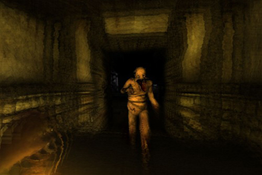
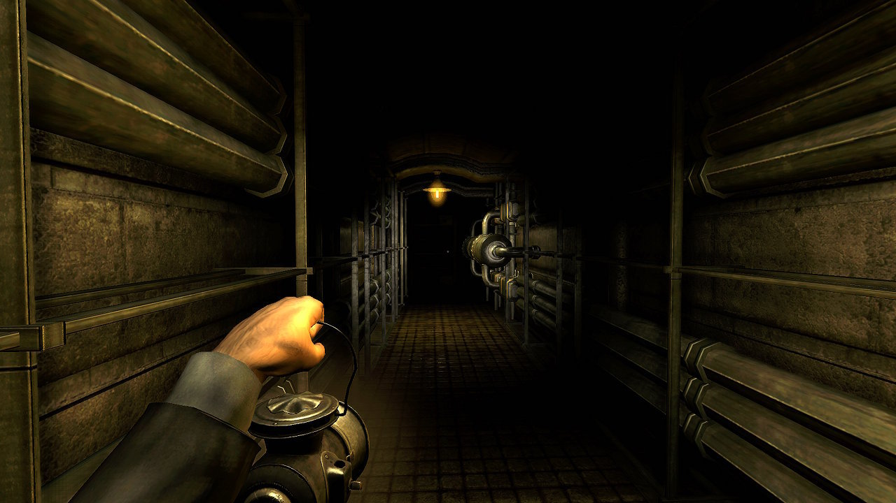
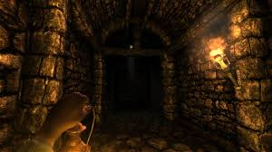

Amnesia
Amnesia: The Dark Descent is a survival horror video game by Frictional Games, released for Microsoft Windows, Mac OS X, and Linux platforms. The game features a protagonist named Daniel exploring a dark and foreboding castle, while avoiding monsters and other obstructions as well as solving puzzles. The game was critically well received, earning two awards from the Independent Games Festival and numerous positive reviews. Originally released independently as a download, the game has since been published in retail by 1C Company in Russia and Eastern Europe as well as THQ in North America. A collection of five short stories set in the world of Amnesia, written by Mikael Hedberg and illustrated by the game's concept artists, was also made available. In addition, the game's soundtrack is available for purchase and a free content expansion called "Justine" has been released as well as many fan-made expansions and stories for its unique "Custom Story" gamemode.
 |
 |  |  |
In a similar vein to the developer's previous games, Amnesia is an adventure game played from a first-person perspective. The game retains the physical object interaction used in the Penumbra series, allowing for physics-based puzzles and interactions such as opening doors and fixing machinery. Few in-game objects are operated by toggle; to open a door, for instance, the player must hold down a mouse button and then push (or pull) the mouse. This gives the player stealth, allowing them to peek out a barely-opened door or open it slowly to sneak away, but also adds to the player's sense of helplessness, as it is now entirely possible to attempt to push open a "pull" door whilst danger approaches from behind. In addition to a health indicator, Daniel's sanity must be managed. Being in darkness too long, witnessing unsettling events, or staring at monsters will reduce Daniel's sanity, causing visual and auditory hallucinations and drawing the attention of monsters. Light sources help restore sanity, and if none are available Daniel may use tinderboxes to ignite candles in wall sconces and candelabra, or deploy an oil-burning lantern found near the beginning of the game. However, the number of tinderboxes and the amount of oil available are both limited, and standing in a light source also makes the player more noticeable to monsters. The player must balance the amount of time Daniel spends in light and shadow. Sanity is fully restored once Daniel completes an objective or progresses the game's story. It may also be restored by staying in the shadows until Daniel passes out, but this leaves him extremely vulnerable to any nearby monsters. If a monster spots Daniel, it will chase him until he's out of sight. If spotted, Daniel must flee, as Amnesia does not give the player access to weapons. Daniel must find hiding places or barricade doors with rocks, chairs and other obstacles; however, monsters are capable of tearing down doors in their path and kicking obstacles out of the way, and move extremely fast once they have spotted their prey. Players can also choose to hide Daniel in the shadows, at cost to sanity. Monsters who lose sight of Daniel will search for him for a time, but will eventually leave and vanish.
In late August 1839, Daniel, a young man from London, awakens in the dark halls of the Prussian Brennenburg Castle with little to no memory about himself or his past. All he can remember is his name, that he lives in Mayfair and that something is hunting him. Shortly after awakening, Daniel discovers a note written to himself, from which he learns that he has deliberately erased his own memory, and that he needs to descend into the Inner Sanctum of the castle to kill the Baron, Alexander. The exploration of the dark depths of the castle (following a trail of pink liquid that he seems to have left for himself) is also a journey into his own erased past, as he discovers not only notes and his own journal entries, but experiences visions of past events that took place within the castle's countless chambers (including memories that are not his own). While he unravels the mysteries of Brennenburg Castle, he also finds himself hunted by a dangerous unearthly presence that manifests itself as a corruption that is slowly covering the castle in fleshy, acidic growths, and bizarre monsters against which his only defense is to flee. These events are linked and pertain to why Daniel came to Brennenburg.
Daniel was once a part of an archaeological expedition to Africa, in an attempt to excavate a tomb called "The Tomb of Tin Hinan". He came across a mystical orb buried within the ruins of the ancient temple, and brought its broken pieces back to England where he successfully assembled them. Daniel started to seek information about the Orb's history from a geologist and a professor. However, he began to be plagued by nightmares, and several people who came across his path, and that of the Orb, died horribly at the hands of the "Shadow" that appears to follow his footsteps. Desperate and despairing, he received a strange letter from a Prussian baron named Alexander, who promised protection if Daniel would sojourn in his castle.Daniel had no other choice but to flee to Brennenburg. As he arrived at the castle, he was greeted warmly by the baron, Alexander of Brennenburg and his servants, who appeared to be very pleased by Daniel's arrival. But the young man was unaware that the enigmatic deity had silently chased him to Brennenburg. Alexander knew this, and promised Daniel that they will banish the cosmic beast forever. Alexander told Daniel all he knew about the Orb's power. Daniel doesn't seem to be interested about the artifact's true nature and suggested that they should throw it away. Alexander advised against that as Daniel would still be a part of the Orb, and eventually be consumed by the Shadow. Having the Orb, he could still fight back. Daniel asked Alexander about the letter he sent to respond Daniel. Alexander simply said, things can be done, but at a price. Alexander showed various parts of the Brennenburg castle to Daniel, including the archives, a refinery, a prison where he kept the "criminals", a bottomless pit called the Chancel, and the Inner Sanctum itself, where they can permanently banish the Shadow.